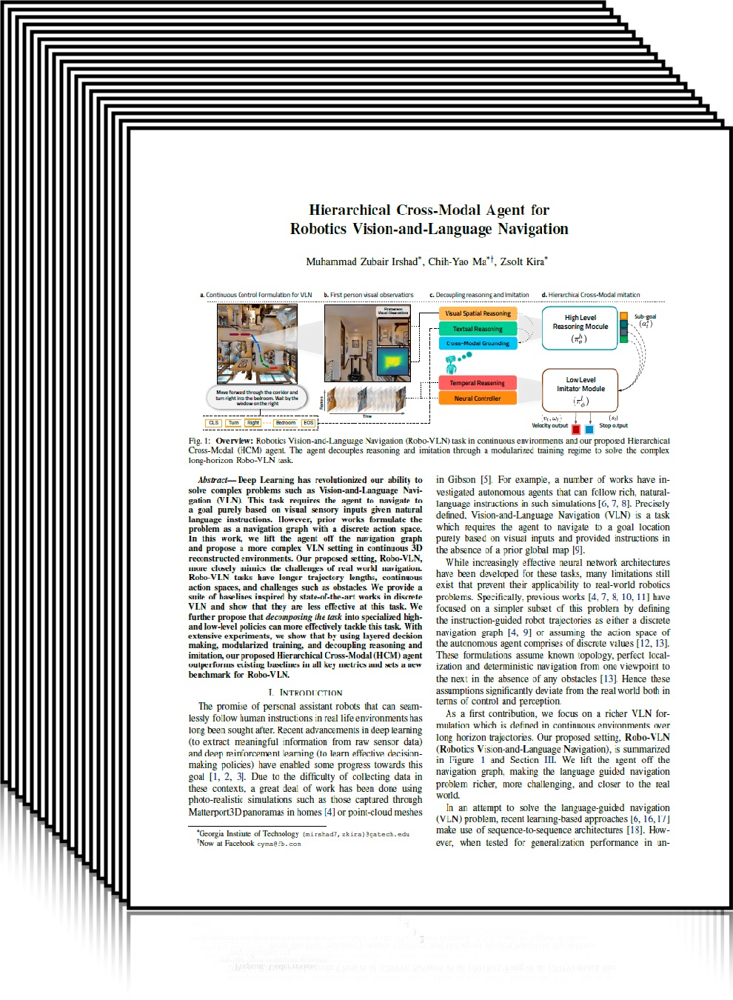

|
Muhammad Zubair Irshad |
Chih-Yao Ma |
Zsolt Kira |
|
|
Georgia Tech |
Facebook/Georgia Tech |
Georgia Tech |
|

|
Deep Learning has revolutionized our ability to solve complex problems such as Vision-and-Language Navigation (VLN). This task requires the agent to navigate to a goal purely based on visual sensory inputs given natural language instructions. However, prior works formulate the problem as a navigation graph with a discrete action space. In this work, we lift the agent off the navigation graph and propose a more complex VLN setting in continuous 3D reconstructed environments. Our proposed setting, Robo-VLN, more closely mimics the challenges of real world navigation. Robo-VLN tasks have longer trajectory lengths, continuous action spaces, and challenges such as obstacles. We provide a suite of baselines inspired by state-of-the-art works in discrete VLN and show that they are less effective at this task. We further propose that decomposing the task into specialized high- and low-level policies can more effectively tackle this task. With extensive experiments, we show that by using layered decision making, modularized training, and decoupling reasoning and imitation, our proposed Hierarchical Cross-Modal (HCM) agent outperforms existing baselines in all key metrics and sets a new benchmark for Robo-VLN.
Robo-VLN Dataset
Different from existing VLN environments, we propose a new continuous environment for VLN that more closely mirrors the challenges of the real world, Robo-VLN --- a continuous control formulation for Vision-and-Language Navigation. Compared to navigation graph based and discrete VLN settings, Robo-VLN provides longer horizon trajectories (4.5x average number of steps), more visual frames (3.5M visual frames), and a balanced high-level action distribution. Hence, making the problem more challenging and closer to the real-world.
Try our Dataset!
Demo Video
Source Code and Dataset
We have released the PyTorch based implementation and dataset on the github page. Try our code!
Paper and Bibtex
|

[Paper]
[ArXiv]
|
|
Citation
M.Z. Irshad, C.Y. Ma, and Z. Kira. Hierarchical Cross-Modal Agent for Robotics Vision-and-Language Navigation
In International Conference on Robotics and Automation (ICRA) 2021.
[Bibtex]
@inproceedings{irshad2021hierarchical,
title={Hierarchical Cross-Modal Agent for
Robotics Vision-and-Language Navigation},
author={Muhammad Zubair Irshad and Chih-Yao Ma and Zsolt Kira},
booktitle={Proceedings of the IEEE International Conference
on Robotics and Automation (ICRA)},
year={2021},
url={https://arxiv.org/abs/2104.10674}
}
|